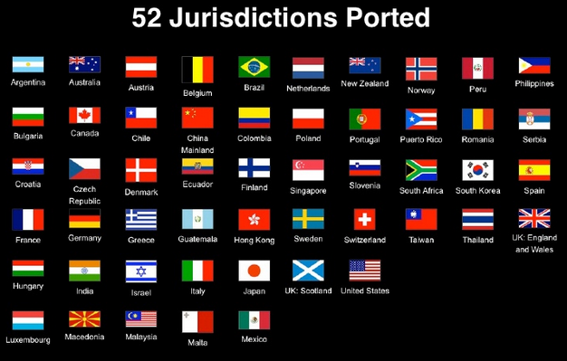

Automobile Polo 1911
{kind=link}
Institutional Repositories 101
BY AMANDA CURNOW
This is a very basic introductory post on institutional repositories and how they facilitate Open Access (OA).
What is an institutional repository?
An institutional repository (IR) is basically an online collection of an institution’s research. It may contain theses, articles, conference papers, creative works, grey literature and more. Wikipedia defines an institutional repository as “an online archive for collecting, preserving, and disseminating digital copies of the intellectual output of an institution, particularly a research institution” (Institutional repository, 2014).
Why they were set up?
Institutional repositories were created in response to exorbitant increases in journal subscription charges -- often called the “Serials Crisis” (Serials Crisis, 2014). According to White and Creaser (2007), between 2000 and 2006 the median journal subscription price increased between 42% and 104%.
As one letter to The Guardian noted, “Scholarly publishing is the only industry that gets its raw materials free of charge and then sells them (highly priced) back to the institutions that provide them” (Open access plan is no academic spring, 2012). Institutional repositories are also a response to the dissatisfaction among scholars for the time delays in circulating the results of research via traditional publishing methods (Cullen & Chawner, 2011).
What they do?
The goal of an IR is to create greater discoverability of, and access to, the intellectual product in a single portal, ultimately increasing the impact of the research. It also has the flow-on effect of raising the profile of individual researchers and the university/research institution itself. Institutional repositories typically provide access to the full text of research outputs, without the need for expensive subscriptions to journals.
The best repositories conform to the Open Archives Initiative Protocol for Metadata Harvesting (OAI-PMH), allowing them to be indexed by search engines such as Google and other aggregators, like OCLC’s OAIster and Bielefeld Academic Search Engine (BASE) so that the content can be easily discovered (Suber, 2012).
How they can help facilitate Open Access?
Institutional repositories can help facilitate Open Access by providing free online access to the full text of a research output for anyone with an internet connection, whether it is an article, conference paper or other work.
For an article or conference paper, the full text may be one of several different versions produced during the lifecycle of the scholarly process: a submitted manuscript, which is the author’s draft; an accepted version, which is an amended, peer-reviewed version; or the publisher’s version, which is the accepted version fully formatted. (For more information on article versions see the New Zealand Version Toolkit.)
This form of open access is called ‘green’ open access and occurs when the author self-archives the output. As Peter Suber puts it, "the OA movement uses the term […] green OA for OA delivered by repositories. Self-archiving is the practice of depositing one’s own work in an OA repository. All three of these terms were coined by Stevan Harnad” (Suber, 2012, p. 53).
Self-archiving is a passive act of making research outputs available after the research has been traditionally published; it complements the traditional publishing system. In order to ensure copyright is not infringed, the Sherpa/Romeo website can be used to identify many journal publishers’ copyright policies. The policies state which version may be deposited and under what conditions. Typical conditions include a set statement, embargo period and link to publisher’s version or website.
The Registry of Open Access Repositories (ROAR) provides information about OA repositories globally. There is also a graphical map representation of OA repositories at Repository66.
Institutional Repositories in New Zealand
New Zealand universities followed the example of their international counterparts and set up institutional repositories during the 2000s, as did some polytechnics. Each repository typically includes research outputs from current staff and post-graduate students, as well as recently completed theses.
Most of the universities have done some sort of retrospective digitisation of doctoral and/or masters theses. However, each institution varies in what is publicly accessible due to copyright restrictions and authorial permissions.
The content in the eight New Zealand university research repositories is aggregated by NZResearch.org.nz, which is run by the National Library of New Zealand Te Puna Matauranga o Aotearoa. The individual university repositories’ sites can be found at the following links:
- AUT Scholarly Commons
- Lincoln University Research Archive
- Massey University, Massey Research Online
- University of Auckland, ResearchSpace
- University of Canterbury Research Repository
- University of Otago OUR Archive
- University of Waikato Research Commons
- Victoria University of Wellington, ResearchArchive
These repositories are critical for the dissemination of research by Kiwi researchers about New Zealand. Some are continuing to advance the cause through recently approved mandates to deposit (see Waikato University's Open Access Policy).
References
- Cullen, R., & Chawner, B. (2011). Institutional Repositories, Open Access, and Scholarly Communication: A Study of Conflicting Paradigms. The Journal of Academic Librarianship, 37(6), 460-470
- Institutional repository. (2014). Retrieved from http://en.wikipedia.org/wiki/Institutional_repository
- Serials Crisis. (2014). Retrieved from http://en.wikipedia.org/wiki/Serials_crisis
- Suber, P. (2012). Open Access. MIT Press, Cambridge, MA. Available at http://mitpress.mit.edu/books/open-access
- White, S. & Creaser, C. (2007). Trends in scholarly journal prices 2000-2006. Retrieved from http://www.lboro.ac.uk/microsites/infosci/lisu/downloads/op37.pdf
- Open access plan no academic spring. (2012, July 18). The Guardian. Retrieved from: http://www.theguardian.com/science/2012/jul/18/open-access-plan-no-academic-spring
Amanda Curnow is the Web Technologies Librarian at Massey University Library
What's in a Licence?
BY MATT MCGREGOR
 Screenshot of Jurisdiction Ports by Timothy Vollmer, from his presentation, "Creative Commons and the Culture of Openness." CC-BY.
{kind=link}
In November 2013, Creative Commons released its ‘4.0 licences’, an updated version of the Creative Commons licences that were intended to be both more plain English and more international. In CC-speak, this meant that the licences would not need to be ‘ported’ to specific jurisdictions. Prior the release of 4.0, the process of porting had been a fundamental part of CC’s work, with dozens of countries all over the world re-drafting the licences to meet the quirks of their own individual legal systems.
The Creative Commons 3.0 licences were ported to New Zealand law in 2007 by Andrew Matangi, a consultant with the law firm Buddle Findlay. Andrew was approached to help draft the licences after being approached by a colleague and asked if “he wanted to do something for free." The colleague’s father happened to be Brian Opie, the then Executive Director of the Council for the Humanities, who had recognised a growing need for CC licensing across the education, research and heritage sectors.
Andrew began drafting the New Zealand licences by having a look at the American English language licences. He quickly decided that their approach wasn’t suitable for New Zealand. “They needed to be far more plain English. These licences are very public facing -- much more so than most legal documents. More members of the public than lawyers will be reading them.”
Rather than start from scratch, Andrew contacted a team in the UK, who had similar reservations about the American licences. “They had already put in a huge amount of work to develop a plain English licence. I leveraged off the UK versions and revised them to meet a few peculiarities of New Zealand law. There are a few Americanisms in the Creative Commons licences, which I tried to get away from, such as references to client and attorney relationships -- that sort of thing. I also tried to avoid some of the repetition that was in the existing licences.”
Andrew also had to take into account New Zealand-specific legislation, like the Consumer Guarantees Act, which the licenses needed to contract out of. “From there, we went back and forth with the legal team at CCHQ, which was a very easy process. They were welcoming of the move to plain English licences, which is the way more and more legal documents are moving these days.’”
After the New Zealand licences were launched in 2008, the State Services Commission recommended that they be used by the New Zealand Government; in 2010, Cabinet approved government use of the CC licences with the NZ Government Open Access and Licensing framework (NZGOAL). The fact that the licences were ported to New Zealand law proved to be a key motivation for the Government to take up the licences.
Another benefit is that they clarify which country’s law will apply, should a case involving CC licensing ever go to court. Under international law, this is not always obvious, especially when a work is reused online -- Andrew gives the example of a New Zealand work that is used by someone in Korea on a website hosted in the United States. The Creative Commons NZ 3.0 licences cut through this complexity, ensuring that it will always be New Zealand law that applies, should the work be shared and reused overseas.
As Andrew points out, “A big part of contract drafting is ‘no surprises’; it should be clear what everyone’s obligations are and what happens should the contract be breached. With intellectual property, it’s always best to put in black and white what the position is.”
Creative Commons licences also take into account legal liability, should anything go wrong after someone reuses a work. At a Creative Commons in Schools event in February, Andrew used the example of a CC licensed science experiment that caused injury or damage: under the terms of the 3.0 New Zealand licence, the creator of the experiment would not be liable “on any legal basis...for loss or damage.”
Since drafting the 3.0 New Zealand licences, Andrew has been contributing to the development of the international 4.0 licences, which were released in November last year. The 4.0 licences follow the lead of the UK, New Zealand and Australian licences by incorporating more plain English language. As Andrew explains, “The licences are much longer, as international licenses have to deal with many more issues. But they are a vast improvement on the very legalistic 3.0 licences.”
“The 4.0 licences were written with the goal of not being ported to specific jurisdictions. They were trying to get away from references to specific jurisdiction’s laws on the licences, so that intergovernmental organisations like the UN and The World Bank would be comfortable with using them.”
Licence to Read
BY ELIZABETH HERITAGE

I am of the generation that has grown up with a vastly changing copyright environment, and my ideas about ownership, sharing, rights, intellectual property, theft and fair use have developed - are developing - accordingly. As I’m the new Comms Lead for Creative Commons Aotearoa NZ, I wanted to use this post to introduce myself and my ideas, particularly - as I’m also a freelance publisher - around books.
As a lifelong consumer of creative media, my attitude to copyright has become a desire to do the right thing (i.e. support artists) tempered by a sort of frustrated pragmatism. For example, I can’t play the DVDs I’ve hired in NZ on my Playstation because I brought it back from the UK with me and it’s region-locked. So I have to rip illegal copies of films I’ve legally hired in order to watch them in my own home. And I’ve more or less given up watching actual television: partly because I want to choose what I watch from around the world, and partly because the energy I’m willing to devote to dancing round the various restrictions only goes so far.
I always try to keep in mind my experience as a consumer when navigating copyright in my professional life as a publisher. On the one hand, publishers and authors need to be able to make a living from books, otherwise there will be fewer (less interesting, less diverse) books and, I firmly believe, human cultural development will suffer. So there needs to be some kind of financial transaction. With books made from paper, this is very easy. We already have an international infrastructure of sales, distribution and bookshops that is essentially one giant paywall between publishers and readers. (Even when you get a book out from the library, the author still gets a cut.) But what about ebooks?
What to do about ebooks is a conversation I am constantly having with publishing colleagues around the world. How to best make them, whether to attach digital padlocks (in the form of digital rights/restrictions management, or DRM), how to market and publicise them, and of course, what the hell to do about that giant book-gobbling monolith, Amazon.com.
An interesting idea that keeps coming up is that piracy is the new publicity. (I really like the rakish “piracy”, sounds so much more dashing and romantic than “copyright infringement”.) Anecdotes abound wherein heavily pirated ebook titles have coincided with (caused?) inflated sales, both print and digital. This is all part of one of the fundamental truths of publishing: word of mouth sells books. Traditionally, publishers have tried to stimulate this by giving free copies to certain influential people (reviewers, journalists). Now, in addition to this, some publishers are trying limited zero-pricing, eg. whereby an ebook is free for a day or a week, then goes back up to its normal price.
Another thing I keep hearing is that publishers have to get better at communicating to readers the value that publishers add (in terms of editing, book design, sales and marketing infrastructure etc). This is to combat the big lesson that Amazon.com is teaching readers, i.e. that ebooks are only worth a couple of dollars. Well, maybe. It is true that publishing as a profession is enormously valuable, and it is also true that ebooks cost a lot more than 99 cents to produce. But is that the readers’ problem?
This disconnect is partly because, although the words inside may be the same, an ebook is fundamentally a different thing from a paper book. When you buy a paper book, you’re purchasing a stable, singular, physical object with a very clear ownership status. The book was in the shop, you bought it, that particular copy is now yours. Perhaps you will bend a few corners of pages back, or get your copy signed by the author, thus rendering your copy physically distinct from others. Your book-as-tangible-object will be unaffected by which electronic devices you own, which media platforms you patronise, how the Amazon vs Hachette battle plays out, and how well you back up your data. No malware in the world can touch it. Your paper book feels steady, feels valuable.
An ebook feels completely different. For a start - and this is especially true for books marked with DRM - purchasing an ebook feels much more like purchasing a licence to read a particular work, rather than buying an instance of the work itself. It’s also a lot more fiddly: you have to make sure that you get the right kind of file for the right kind of device. Often you find yourself unable to transfer your ebook from one of your devices to another, even though they all belong to you. And even if the ebook file works now, it’s vulnerable to future technological developments rendering it unreadable, possibly quite soon. Ebooks feel almost like a rental - temporary, with less commitment. Less valuable. No wonder we think they ought be cheap, even free.
And DRM - part of publishers’ doomed attempt to assert a paper-based copyright model in the face of the digital age - turns out to just be a giant pain. All it does is create irritating hitches, like my Playstation being unable to play local DVDs. DRM ebooks are much more difficult to share, which directly affects the power of word-of-mouth marketing. How will your friends know how wonderful your new favourite novel is if you can’t lend it to them? We have the big lesson of the music industry staring us in the face: the easier you can make electronic creations to purchase, the more consumers will be inclined to buy rather than steal them.
So where does this leave us? How can we strike a balance between ensuring that books reach the widest possible audience while maintaining an economically viable creative industry that supports authors and publishers?
I still think that the traditional copyright model is best for paper books: that still feels fair (except I think copyright should die when the creator does). But I believe that paper and digital are sufficiently different that ebooks - even electronic versions of the same title - require a different approach. They need to be sold differently, marketed differently, stored and distributed differently. Their copyright needs to be managed much more openly, with a focus on attracting readers through ease of sharing, rather than the punitive, adversarial approach of DRM.
No one can stop readers pirating ebooks. That option is off the table. Instead, it is publishers’ and booksellers’ responsibility to make high-quality, legitimately purchased, easy-to-share ebooks easier and more pleasant to access than pirated copies. I don’t know yet exactly how we’re going to do this, so please do chip in with your own ideas. But I have faith that somehow the publishing industry can make it happen. If you book them, they will come.
Elizabeth Heritage is the Communications Lead for Creative Commons Aotearoa New Zealand and a freelance publisher.
My Problem with Copyright
BY KATARINA GRAY-SHARPE
According to Heywood (2000), property is “a social institution, defined by custom, convention and, in most cases, by law” (p. 141). It is “an established and enforceable claim to an object or possession; it is a right not a ‘thing.’” Where enforced by legal apparatus, proprietary rights can be seen as both negative and positive, allowing the claimant to control behaviours associated with tangible and intangible products.
Intellectual property is an entitlement to an “intangible product” of “human mental activity” (Gordon, 2012, ¶ 5-6). The World Intellectual Property Organization ([WIPO], n.d.b) defines intellectual property broadly as “creations of the mind: inventions; literary and artistic works; and symbols, names and images used in commerce” (p. 2). From this definition, two categories of intellectual property emerge: industrial property (such as trademarks) and copyright.
Copyright is an application of proprietary rights. Products covered by copyright include “(a) literary, dramatic, musical and artistic works: (b) sound recordings: (c) films: (d) communication works: (e) typographical arrangement of published editions” (Copyright Act 1994, s14[1]). These rights include control of duplication (or copying), which the author may assign to others (for example, through Creative Commons licensing). In many languages, copyright is termed an “author’s right…. underlin[ing] the fact, recognized in most laws, that the author has certain specific rights in his creation which only he can exercise” (WIPO, n.d.a, p. 4).
Copyright is focused on authorship: “sustaining the conditions of creativity that enable an individual to craft out of thin air an Appalachian Spring, a Sun Also Rises, a Citizen Kane” (Goldstein, 1991, as cited in Boyle, 2014, p. 275). The writer was conceived in the 1700s “as one mouth among many” (Boyle, 2014, p. 273). However, in response to the Romantic “aristocratic cult of individuality”, craftsmanship was reconstructed as authorship, the source of inspiration moving from beyond to within the individual (Swart, 1962, p. 77). This immanent inspiration finds legal grounds in copyright.
Copyright maintains distinctions between the idea and its authorial expression. Ideas are conceived as being publicly-sourced from the commons, whilst expression is privately-derived from the creative mind. As an example, multiple filmmakers may use the same language, the same colours, and the same musical notes, but create independent, creative works for which they each can claim author’s rights. Thus, originality of expression is used as justification to manage the conflict between the public and private claims to property.
Copyright’s reliance on property and immanent inspiration are problematic for me. In the first instance, property as the claiming of something (belongings) conflicts with the idea of being claimed by something (belonging). I come from a family where we were claimed by the land and its people. My father’s generation will be the first to apply European inheritance customs. This sense of belongingness initiates obligation. My paid and unpaid work emphasises service to community. I still struggle with the conflicting forms of belonging/s. Although I respect the objects of others, it has taken almost 20 years for me to learn to lock the house.
In the second instance, I find extremely peculiar the idea that inspiration emanates from a singular mind. As a songwriter, image-maker, and academic, I do not believe that creativity is privately-derived. Although my creative works are crafted by me, they draw on objects and ideas external to my mind. Lacking a definitive method for attributing these sources does not mean that those sources do not exist. It simply means my work is always provisional. Although copyright alone demands enforceable behaviours, such conditionality engenders its own responsibilities.
Responsibility is related to duty, accountability, and actions of a "sensible, reasonable or morally correct fashion", and has become central to my thinking due to engagements with the theorist Emmanuel Levinas (Heywood, 2000, p. 146). Bergo (2011) describes “the fundamental intuition of Levinas’s philosophy [as] the non-reciprocal relation of responsibility” (¶ 4). According to Levinas (1989), I am born with responsibility, unequal, and in persecution. As the source of my inspiration, I am “disturbed by the face of the Other” and must prepare myself to answer its call (Introna, 2007, p. 271).
I have found two tools that help me in my task. First, I have published in open formats. There are normative arguments, which claim user rights based on financial sources. However, I utilise open access publishing as one way of meeting my obligation to the muses’ call. Second, I utilise Creative Commons (CC) licensing for my still and moving images. CC licensing is not a remedy for the problem of property and intrinsically-sourced creativity. In fact, it relies on copyright as a foundation. However, it does allow me to be held accountable for my duties through my choice of CC license.
I utilise the Attribution-NonCommercial-NoDerivatives 4.0 International (CC BY-NC-ND 4.0) license. This licence asserts three rights. First, the license claims the right to be appropriately credited (BY). In addition to being standard in the Academy, attribution allows me to be held accountable for my creative mistakes. Further, it facilitates connection with users to whom I owe duty of service. Second, the license claims the right to restrict use to non-commercial purposes (NC). By allowing free commercial use of my work, I limit the ability of others for whom provision provides an income. Third, the license claims the right to control distribution of modified versions (ND). I cannot act effectively to rectify the mistakes of others online. More importantly, I must be answerable for and to the creative vision that is external to me. The CC BY-NC-ND 4.0 license helps me to achieve that goal.
REFERENCES
Bergo, B. (2014). Emmanuel Levinas. In E. N. Zalta (Ed.), The Stanford Encyclopedia of Philosophy (Fall ed.). Retrieved from http://plato.stanford.edu/entries/levinas/
Boyle, J. (2014). Copyright and the invention of authorship. In J. Boyle & J. Jenkins (Eds.), Intellectual property: Law & the information society – Cases & materials (pp 271-276). Retrieved from http://web.law.duke.edu/cspd/pdf/IPCasebook2014.pdf
Copyright Act, No. 143. (1994). Retrieved from http://www.legislation.govt.nz/act/public/1994/0143/latest/whole.html?search=ts_act_copyright+act#DLM345634
Creative Commons. (n.d.). About. Retrieved from http://creativecommons.org/about
Elkin-Koren, N. (2005). What contracts cannot do: the limits of private ordering in facilitating a creative commons. Fordham Law Review, 74(2), 375-422.
Gordon, W. J. (2012). Intellectual property. In M. Tushnet & P. Cane (Eds.), The Oxford handbook of legal studies. doi: 10.1093/oxfordhb/9780199248179.013.0028
Heywood, A. (2000). Key concepts in politics. Basingstoke, UK: Palgrave Macmillan.
Introna, L. D. (2007). Singular justice and software piracy. Business Ethics: A European Review, 16(3), 264-277. Retrieved from https://www.researchgate.net/publication/227603123_Singular_justice_and_software_piracy?ev=prf_pub
Levinas. E. (1989). The Levinas reader (S. Hand, ed.). Oxford, UK: Basil Blackwell.
Swart, K. W. (1962). “Individualism” in the mid-nineteenth century (1826-1860). Journal of the History of Ideas, 23(1), 7-90. Retrieved from http://www.jstor.org/stagble/2708058
Volger, H. (2010). WIPO - World Intellectual Property Organization. A concise encyclopedia of the United Nations (2nd ed., pp. 865-868). Leiden, The Netherlands: Martinus Nijhoff.
World Intellectual Property Organization. (n.d.a). Understanding copyright and related rights. Retrieved from http://www.wipo.int/about-ip/en/
World Intellectual Property Organization. (n.d.b). What is intellectual property? Retrieved from http://www.wipo.int/about-ip/en/
Katarina Gray-Sharp is sometimes an academic, always a patternfinder, and can be found on Twitter @teachingconsult.
Anthony Van Corlear by Charles Loring Elliott
{kind=link}
The Rise of Open Textbooks
BY BILL ANDERSON
Three years ago I was in a university book store in the US. For the first time ever, I saw that students could lease electronic copies of a text book for a semester. At about half the cost of the hardcopy text it was probably a bargain given that the second-hand (hard)copies I saw were going for around two-thirds of the full price. I've since also discovered that students in the US, who pay on average around $US650-700 annually for text books, can lease hardcopy books as well.
In Aotearoa/New Zealand, as in the US, textbooks cost a lot. Victoria Rea's post highlights this point. I'm not sure what has happened in Australia and NZ, but in the US, textbook prices have risen by over 800% since 1978 – in comparison with a CPI increase of around 250%. It is no surprise that with such an increase, US students are seeking and using alternatives such as leasing, or that Victoria suggested that Open Educational Resources (OER) are a step towards solving the problem.
There are, indeed, alternatives to leasing textbooks that take advantage of the large number of open educational resources, typically Creative Commons licensed, available online. Such alternatives come in many forms.
Some lecturers, familiar with and committed to OER use, suggest individual resources that together might substitute for texts. Organisations have attempted to use OERs as the basis for texts. One such is boundless.com, which gathers and organises OER material in ways similar to textbooks. Flat World Knowledge also attempted to bring free and open access textbooks to students. Both have struggled to create business models that incorporate OERs, add value for students, stay low cost and remain profitable.
Publishing companies stand to lose the most as high quality OERs become increasingly available. They are doing what you'd expect – fighting the trend, as they did in the case of boundless.com, or adapting to it. In the latter case, Pearson offer a service that allows lecturers to create course materials using their own content, Pearson's resources, and OERs. The bottom line here is that CC-licensed OERs are having an impact on the way the textbook game is being played. It may take a while, but change is definitely coming.
While textbooks for students are one issue, another is the publication of texts by academics for an academic readership. The issue here is different. All academic authors want their work to be read – by as large an audience as possible. How to make this happen? A colleague of mine, Terry Anderson of Athabasca University in Canada has found at least one answer – and it is an answer I see echoed in a post on this website.
Terry is a highly respected academic and author in the e-learning and distance education field. He has written several books, publishing his first two under 'normal' copyright licensing provisions. They were successful, selling around 1000 and 1200 respectively.
Terry's most recent book is available openly from the publishers under a CC licence (CC BY-NC-ND 2.5 CA). Terry tells me that downloads of whole copies as well as individual chapters have amounted to over 180,000. What's more interesting is that the publisher has also reported sales of hardcopy books have amounted to over 2200 copies. Terry feels that open publication has both increased readership and increased sales (as it did for Richard White's music – see Hannah Mettner's post about Richard White).
Like the music industry before it, the world of books is changing. Certainly, in the academic world the Creative Commons licensing of texts and the use of existing OERs is creating a publication environment unlike any we have seen before.
Bill Anderson has recently retired from the position of Director, Distance Learning, at the University of Otago.
What CC means for your Gran (or Grandchild)
BY MIKE RIVERSDALE
 "Mike and Nanna 14 Days Old" by Mike Riversdale. CC BY
"Mike and Nanna 14 Days Old" by Mike Riversdale. CC BY
Every family has its story.
As we commemorate 100 years of the beginning of World War 1, a lot of us are tracking down our grandparents stories, how the soldiers within in our families fought and died, how those back at home coped with the hardships and the many years of repercussions as the scars, both external and internal, came home.
Together with these ‘big event’ stories, we all have a myriad of everyday tales that we commonly think of as particular to ourselves, memories of days gone past and yarns to be recounted at family get-togethers. And of course we all have our recent stories: last year’s summer holiday, the kid’s birthday celebration and even that catch up with mates in the pub last week.
All of these stories go to make up the fabric of our families, our friendships and our whanau - without them we are indeed islands and, as we all know, “No man is an island”.
So what does Creative Commons licences have to do with this collection of stories spanning the generations in your family?
Outside of verbal histories (or in some cases myths and even our own family urban legends) we gain insight into our earliest stories from the writings, photographs and, if we’re lucky, film left behind by our ancestors. As time passes on, these artefacts enter the “public domain" (also know as “no known copyright”) and come to possess, as we see in the personal histories and stories being used in the World War 1 commemorations across the Internet, a sense of common / shared knowledge.
Hearing Gran recall her childhood stories, during those fleeting times that she wants to tell us and we are old enough to listen, are special moments. But when we touch, see and hear from the artefacts of her days -- such as her father’s diaries scribbled during the battles -- we are immediately connected in a far more visceral manner. We feel it as part of our own story.
Taking a step sideways for second, we are all keenly aware, especially in times of emergency and hardship, that families that play together stay together. These communities of families are the coming together of stories shared across the whanau boundary as they build, one upon the other, flowing across and through to make the very fabric of our society.
As stories are shared, the artefacts (diaries, cine film, video tapes, clothes, tapes) become the ‘facts’ upon which we all stand. Locking up these artifacts with individuals and inside families could slowly diminish our sense of society, community and shared being.
However, letting Gran’s artefacts go to the vagaries of the ‘marketplace’ is not something many of us feel comfortable with - these are OUR stories and we want them to be treasured and loved as much as we do.
Creative Commons licences allows us to think into the future, to place our own wishes upon our photos, to let future generations know how we’d like our stories to be shared.
Some may indeed want to reserve all rights and keep the diaries away from the commercial world. Others may want the great great grandchildren to know that the re-use of the 1970’s holiday film would be welcome as long as it wasn’t for monetary gain (that’s a BY-NC licence). In fact, most of use will choose different approaches for different artefacts - the diary is for certain eyes and not to be shared, the photos of beaches are for all to use however they want and in whatever manner and tools people have in the future.
Creative Commons licences allows all of us, including your Gran, to make a conscious and active choice - this is how our stories can be reused. And for your great grandchildren, or even your cousins third nephew twice removed, this allows them the freedom to take those memories and incorporate them into their own stories, creating a richer a deeper society for all.
Mike Riversdale helps individuals and companies become more successful by motivating, mentoring and supporting their technical/information teams. He is on Twitter @miramarmike and is the co-host of the Access Granted podcast.
Why NZ Needs Open Education
BY VICTORIA REA
Access to education is a fundamental human right, as enshrined in Article 26 of the Universal Declaration of Human Rights. Throughout the world there is a disparity to access of not only education but also high quality educational resources. Open Education is a viable solution to widening access to quality education for all students worldwide.

A student, by Petrus van der Velden. Gift of the New Zealand Academy of Fine Arts, 1936. Te Papa (1936-0012-109). No known copyright.
What is Open Education?
Open Education is based on the simple idea that knowledge is powerful and a public good, and that it is in the best interests of society to increase access to education and educational resources in order to produce a well informed and educated citizenry.
Over the last few years, more and more educators and educational institutions have started to open their resources under open licences, so that these resources can be freely (and legally) accessed, shared and adapted. Open Education provides everyone access to learning materials, most of all those non-traditional groups of students that aren’t engaged in the formal education system.
Why is it Important in Tertiary Education?
Given the changes in technology over the last decade,most universities and other tertiary education institutions have been relatively slow to recognise the potential of open educational resources. Higher educational institutions have been using the internet and other digital technologies for several years. Yet, until recently, most learning materials were locked up behind passwords in closed systems that were unreachable for outsiders. Open Education aims to break down such barriers and encourage and enable the free sharing of content.
Universities are constantly trying to improve their teaching practices by making their processes more engaging and motivating and Open Education Resources are a good method to address some of the problems that tertiary students currently face.
Here are five broader arguments on why higher education institutions should develop open education resources:
- The sharing of knowledge is a good thing, in line with human rights and generally speaking beneficial for society, especially those with little access to formal higher education;
- Resources developed by publicly funded institutions should be able to be freely shared and reused by the public;
- Sharing and reusing content reduces the costs of development i, thereby increasing efficiency;
- Open education resources presents a more positive and accessible view of education and can attract new students;
- Open practices can increase the quality and innovation of resources, as less time has to be spent on information that has already been collated by someone else.
The Cost of Education
The cost of education, and especially higher education, is ever increasing. When enrolling in university, you not only already face the $600- $800 dollars to enroll in one paper for one semester; you also face the sometimes exorbitant prices for some textbooks and resources. Students often have to turn to outdated editions of textbooks -- or even opt not to buy them due to their unaffordability.
When you pay $100 for the latest edition of an 'essential' textbook (which the lecturer is the author of), and also use it twice in a semester, it is easy to see why many are calling for open educational resources. Also, due to the increasing spread by which knowledge and information is produced and disseminated throughout the globe, textbooks can become less relevant days after they are printed when new information comes to light. There is a strong need for up to date and accurate information especially in tertiary education.
Open Education Resources are a way to mitigate this problem. The price of educational content doesn’t need to be as expensive as it currently is. Through sharing this content online, we can add to the pool of information which students all around the world can have access to with little to no financial hindrance.
Conclusion
Education is an integral part of society and participation in higher education is increasingly in demand throughout the world. Despite the large number of people engaged in education there are still barriers to education such as the cost of resources. The idea of Open Educational Resources has the ability to mitigate some of the barriers facing people trying to enter the tertiary education sector.
Victoria Rea is a law student at Victoria University of Wellington, and is currently working as an intern for Creative Commons Aotearoa New Zealand.
The Case for Open Visual Representations
BY CAMERON MCLEAN
By now, most of us know that openness in research is critical. We know the importance of ensuring that primary research objects, such as data, publications, methods, code and review, are made openly and transparently available, with the right to reuse or re-purpose. What is sometimes left out of these discussions is the importance of a broader realm of works and media that researchers often use in their practice, specifically visual representations.
Humans are visual creatures - as Aristotle professes, "the soul never thinks without an image". Should the reader be in doubt of a such a claim, this excellent infographic, which explains why we like infographics, may be persuasive.
In science and academic research, we routinely construct and use visual representations. Graphics and images express difficult concepts in cognitively optimal ways, and they give us insights into data in ways that words or arbitrary symbols cannot. We all benefit from representations that help us communicate, explore, clarify, or critique our ideas.
Sometimes our visual objects are the actual data themselves, or they may be the end result of a long scientific analysis. At other times, graphics in the form of visual narratives are consciously designed to support the communication of complex or highly abstract concepts, or to facilitate some aspect of a workflow. While the art and science of effective visual communication is a field unto itself, the end products, and the various tools and component elements that we use to create such representations, are valuable and reusable resources.
 Reference: Ernst Haeckel - Kunstformen der Natur (1904), plate 46: Anthomedusae. Creative Commons Public Domain Mark 1.0 (via Wikimedia Commons)
Reference: Ernst Haeckel - Kunstformen der Natur (1904), plate 46: Anthomedusae. Creative Commons Public Domain Mark 1.0 (via Wikimedia Commons)
In addition to analysis and data visualisation, where visual representations constitute a core part of the research workflow, we use graphics for all sorts of reasons -- including presentations, slides, posters, conceptual diagrams, websites, and animations. These artifacts may be used to communicate with our peers, as educational materials, in public engagement efforts; they might be co-opted as organisational branding, or supplied to the media for journalistic pieces.
While academia is granted certain freedoms with the use of copyrighted materials, these legal exceptions do not allow us to reuse visual works as broadly as we need to; this is why we need scientific graphics that use open and permissive licenses.
Let's consciously use open principles and make it easier to create, find, share, reuse, and adapt our graphics for science. Having more options available may not necessarily make one a better designer, but it can only help to have better materials from which we can create clear depictions of complex ideas.
So, readers, what openly licensed tools or resources do you use to present or communicate science visually? Add your suggestions or thoughts in the comments and let's pool our graphical riches.
Cameron McLean is a PhD Candidate at the University of Auckland and an Open Science Advocate.
Except where otherwise noted, copyright content on this site is licensed under a Creative Commons Attribution 4.0 International Licence.